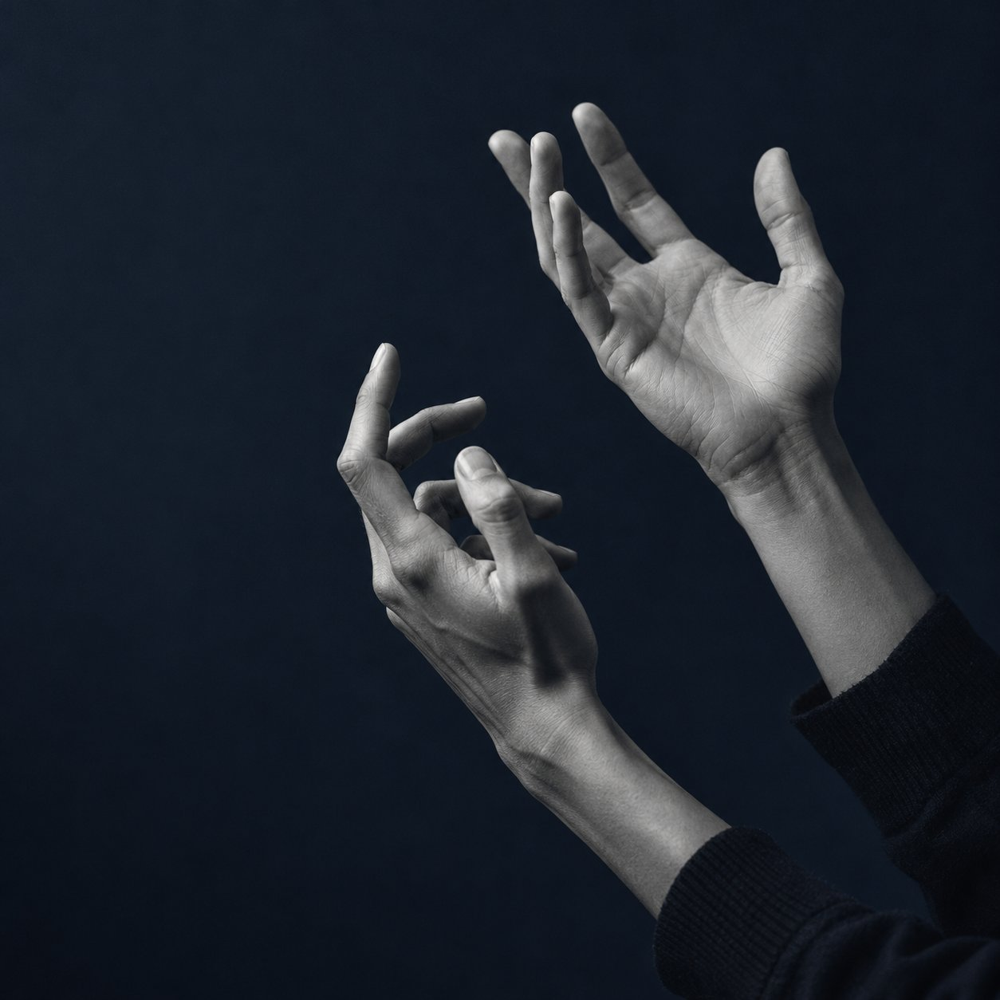

Collect data
A few words. A few examples. A vocabulary that's yours.
Camera
Both hands, in view
It starts with a sign.
Turn on your camera to make this space yours.
Record clips
Recording for No sign (idle)
How to record a good clip
After the 3-2-1 beeps, perform the sign during “GO!”. Aim for about 30 clips per word. Vary your speed and hand position between clips. Both hands are tracked: teal is right, amber is left.
Camera, hand tracking, and training run locally. Nothing is uploaded.
Vocabulary
0 clipsThe words your model will learn.
Add your first word
Choose something you say every day. Then record a few examples of your sign.
Why record “No sign”?
“No sign (idle)” teaches the model what not signing looks like. Record a few clips with your hands resting or leaving the frame.
Your dataset
Keep a backup or bring your clips with you.
Dataset check
Training settings
Model architecture
Learning curves
Training log
Confusion matrix
Held-out clips: rows are true, columns are predicted.
Appears after training.
Live detection
no model yet